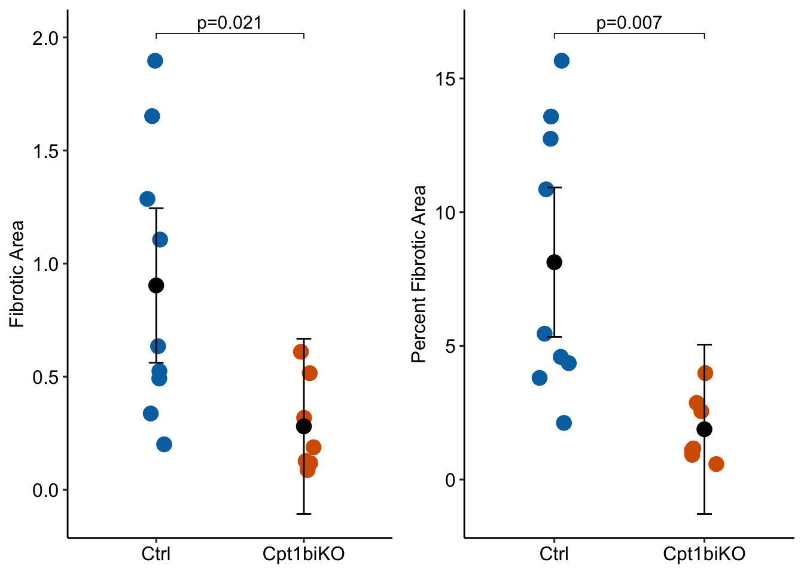

Models for proportion (part to whole percent) data: Part II
Data From Fig 2d – Inhibition of fatty acid oxidation enables heart regeneration in adult mice
The researchers present two tests/plots: the effect of genotype on fibrotic area and the effect on the percent of fibrotic area, relative to total heart area. A GLM with offset combines these into a single analysis/plot and has more power than the linear model/t-test or Mann-Whitney U.
percents
proportions
generalized linear model
offset
power
simulation
Author
Jeff Walker
Published
July 11, 2024
Modified
October 2, 2024
Better than Reproducibility of Fig 5c. The CIs and p-values are from a quasipoisson GLM model with offset
Background: Postnatal maturation of cardiomyocytes is characterized by a metabolic switch from glycolysis to fatty acid oxidation, chromatin reconfiguration and exit from the cell cycle, instating a barrier for adult heart regeneration1,2. Here, to explore whether metabolic reprogramming can overcome this barrier and enable heart regeneration, we abrogate fatty acid oxidation in cardiomyocytes by inactivation of Cpt1b.
Analysis of RNA-sequencing (RNA-seq) datasets revealed reduced expression levels of several key genes of glycolysis and cell cycle progression in the course of CM maturation during the first week after birth, whereas genes related to fatty acid oxidation (FAO) and the Krebs cycle were upregulated (Extended Data Fig. 1a). FAO-related genes that were upregulated included the muscle-specific isoform of carnitine palmitoyltransferase Cpt1b but not the ubiquitously expressed Cpt1a isoform, which are required for mitochondrial uptake of fatty acids and subsequent FAO (Extended Data Fig. 1b).
Motivation: To investigate whether Cpt1b inactivation and the ensuing proliferation of CMs enables heart regeneration, we subjected Cpt1bcKO and Cpt1biKO mice to ischaemia–reperfusion (I–R) injury, a model that closely mimics the situation in human patients receiving a stent for revascularization of an obstructed coronary artery. I–R-induced scars were virtually absent in Cpt1bcKO and Cpt1biKO mice after 3 weeks compared to control animals, although the area at risk (AAR) was similar in both mutant hearts 24 h after I–R surgery (Fig. 2a–f, Extended Data Fig. 5a,b and Supplementary Information).
lm1 <-lm(fibrotic_area ~ genotype, data = fig2d)lm1_emm <-emmeans(lm1, specs ="genotype")lm1_pairs <-contrast(lm1_emm, method ="revpairwise") |>summary(infer =TRUE)gg1 <-plot_response(lm1, lm1_emm, lm1_pairs,y_label ="Fibrotic Area",palette ="pal_okabe_ito_blue")lm2 <-lm(fibrotic_area_percent ~ genotype, data = fig2d)lm2_emm <-emmeans(lm2, specs ="genotype")lm2_pairs <-contrast(lm2_emm, method ="revpairwise") |>summary(infer =TRUE)gg2 <-plot_response(lm2, lm2_emm, lm2_pairs,y_label ="Percent Fibrotic Area",palette ="pal_okabe_ito_blue")# contrast_table <- rbind(lm1_pairs, lm2_pairs)# contrast_table |># kable(digits = 4) |># kable_styling() |># pack_rows("linear model/t-test of fibrotic area", 1, 1) |># pack_rows("linear model/t-test of fibrotic area as percent of total area", 2, 2)plot_grid(gg1, gg2, ncol =2)

Notes on what the researchers did
The researchers report a t-test of fibrotic area (left panel above). The effect size (the difference in mean fibrotic area between genotypes) is confounded by differences in heart size between genotypes. So this comparison is not very meaninful as is.
The researchers report a t-test of relative fibrotic area (the percent of total heart area that is fibrotic)(right panel above). Relative fibrotic area is a meaningful response but presenting this as a difference is weird as we move from near zero to near 0.5 to near 1.
look what the researcher’s t-tests implies about inference. Both t-tests imply the 95% CIs shown in the plots. These CIs imply mean fibrotic areas that are less then zero are consistent with the data!
A GLM with fibrotic area using log(heart area) as an offset variable combines the two analyses above into a single analysis!
A common way to test for the effect of a treatment when the effect is confounded by a covariate is ANCOVA. For example, many researchers test for the effect of a treatment on O2 consumption and use body weight as a covariate, since O2 consupmption increases with body weight. A linear model with an offset is exactly like an a linear model with a continuous covariate (ANCOVA model) except the coefficient (slope) of the covariate is forced to be 1.
where \(b_1\) is the slope of fibrotic area on heart area (note that the model does not contain the interaction of \(\texttt{genotype}\) and \(\texttt{heart area}\)). If we don’t expect larger hearts to have relatively more (or less) fibrotic area, then we would expect \(b_1 = 1\). An offset forces this expectation.
Importantly, if we use a GLM with log link, the model only models the log-transformed group means – not the means of the log transformed data, as in the ANCOVA model above.
By forcing the coefficient to be one, the effect (0.23) is the ratio of the mean proportion of the KO group to the mean proportion of the Cn group, even though we used the raw fibrotic area (and not the proportion) as the response variable! This is the beauty of the offset model!
While fibrotic area was the response variable in our statistical model, we want to plot the model with the proportion data. This means we need to convert the estimated model means and CIs to proportions. This is easy, simply divide these values by the mean heart area, ignoring genotype levels.
Code
m3_emm_dt <- m3_emm |>summary() |>data.table()m3_pairs_dt <-data.table(m3_pairs)common_factor <-mean(fig2d$heart_area)m3_emm_dt[, mean := response/common_factor *100]m3_emm_dt[, lo := lower.CL/common_factor *100]m3_emm_dt[, hi := upper.CL/common_factor *100]
Here is the percent fibrotic area computed from the model.
Code
m3_emm_dt[, .SD, .SDcols =c("genotype", "mean")]
genotype mean
<fctr> <num>
1: Ctrl 8.127159
2: Cpt1biKO 1.879794
And here is the percent fibrotic area computed by simply averaging the percent data.
Code
fig2d[, .(fibrotic_area_percent =mean(fibrotic_area_percent)), by = .(genotype)]
This is beautiful. We don’t need two plots. The GLM with offset estimates the effect of genotype on Fibrotic Area adjusting for differences in total Heart Area. And we’ve plotted the model using the percent fibrotic area data and estimated means and CIs from the model.
But is the GLM with offset any good? – A simulation comparing it to what the researchers did, or might have done.
For data that look like those in fig. 2d, the Gamma GLM with offset has 18% higher power than both the linear model/t-test and the Mann-Whitney U, but has a very slightly inflated Type I error.